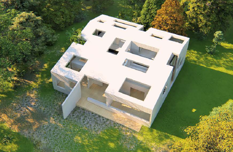
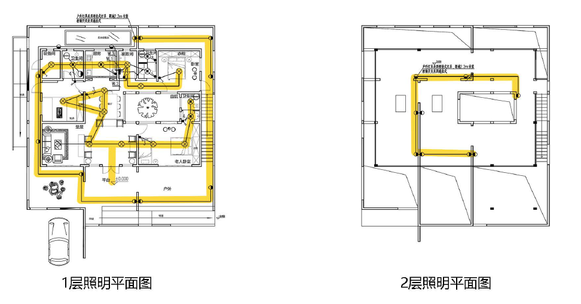
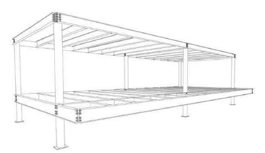
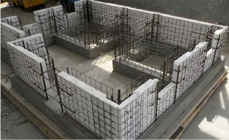
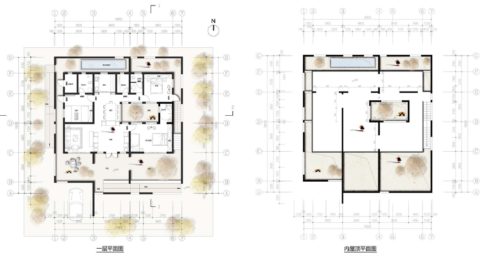

HOMECOMING 归家， AKA TURTLE HOME
-A New Design of Endowment for the Elderly
Mutual support for the elderly
Fallen leaves return to the roots 一to revert to one's origin.
Both a children' 5 world and retirement paradise, Turtle Home allows the elderly and children to live together with ease. The design considered the situations of different families, and family mutual assistance is used to create a family space of collective life for the elderly. The house design uses a multilayered shell system to create a courtyard space that surrounds an inside living space. Taking both the shell system and the longevity-centric perception of turtles in Chinese culture, the house was named Turtle Home in English and 归家in Chinese. 1)王家was chosen because it sounds similar to the Chinese word for turtle, with the meaning of "returning home." With the houses emphasis on the elderly and retirement, the names 归家and Turtle Home were chosen.

Home is the Focal Destination
Taking traditional Chinese culture into account, a traditional Chinese idiom is central to the focus of our house design. "Falling leaves return to their roots" is an idiom used to describe returning to one' 5 hometown andjor family. Eventually returning home is the choice of many, and Turtle Home seeks to capitalize on that. Embracing the age-old idea that raising children fights against old, Turtle Home creates an environment that allows children to easily live with their grandparents. Considering that home is at the center of both retirement and childhood, the young and old are a perfect match.
Children Bring Life
A symbiotic relationship, both children and the elderly benefit each other. Lively children keep the elderly company, helping reduce loneliness, a problem endemic among retirees.Additionally, grandparents impart experience and knowledge to the child, satisfying their curiosity and thirst for knowledge.
DESIGN PHILOSOPHY
Background - An Aging Society
On February 26, 2015, the National Bureau of Statistics of China issued the Statistical Communique on National Economic and Social Development in 2014. According to the Communique, at the end of 2014, the number of people over the age of 60 in China was 212.4 million, accounting for 15.5% of the total population; the population over the age of 65 was 137.55 million, accounting for 10.1 %, exceeding 10% for the first time. The aging problem has caught China by surprise. The problem has been raised to the strategic height of the development of the count叩and well-being of the Chinese people."
Design Subject
We are designing a low-rise villa for around the city and suburb to create a comfortable, quiet, and convenient green community for the elderly. Through the combination of the elderly villa community and the smart home, the quality and comfort of the house can be improved by using solar energy.
Adapting to Changing Demographics for Mutual Assistance
The Chinese family model is changing, creating problems for the traditional model of elderly care. Historically the Chinese elderly care model has been family based, with families taking care of their older counterparts. Multiple children would care for their parents and grandparents in old age. With the implementation of China' 5 One Child Policy family sizes across China have gotten smaller. Going into the future one child will be tasked with providing for six other people, in addition to their own families. This is known as the 4-2-1 problem; only children will be tasked with supporting both of their parents and potentially all four grandparents, as they will have no siblings to help care for their aging family members. These smaller families will not be able to take care of the elderly as effectively as larger families have in the past. A lot of families cannot bear the cost of caring for their seniors, and this problem will continue to grow.
Although various pension institutions can solve the problem of old-age care, this model has huge social costs and severe resource consumption. The vast majority of elderly people are accustomed to living with the family and are reluctant to go to nursing homes. Nursing homes are often lonely and uncomfortable compared to living at home.Considering various situation of different families,we are using the mutual assistance to build a domestic space for elderly people.
DESIGN PROCESS
The house was designed using a system of shells.
The design begins with an outer shell that surrounds the courtyard. Within the courtyard space a second shell is placed to create a livingspace separate from the out-doors.
In the middle of the living shell a garden shell is introduced,providing for further access to the fresh air and sunlight..Just as a turtle finds its shelter andsafety within its shell our home is comprised of an outer shell with an inside living area. Our design concept brings the beauty of nature indoors and brings the function and comfort of indoors to the outside.

INSIDE OUTSIDE SPACE
Use inner courtyards for different requirements to connect different living areas and to make the indoor and outdoor space closely.
The composition of the local two-story platform and the ash space under the squat roof not only connects the interior and exterior spaces, but also takes the sun protection in summer and hermal insulation and ventilation in winter into connection.
Use inner courtyards for different requirements to connect different living areas and to make the indoor and outdoor space closely.

LIGHTING DESIGN
Natural lighting
The naturallighting design takes energy saving, aesthetic modeling, space needs and lighting needs all into account, providing residents with a comfortable, energy saving and beautiful experience. Diffuse natural light is introduced through the top windows. With uniform light coming from the top of the house, the design provides residents with more than enough light within the courtyard. A courtyard set in the middle of the indoor living space allows for the introduction of light into house itself, providing a more than adequate amount of indoor light. The courtyard aspect to the house design creates a space that is both indoors and outdoors, creating a seamless transition between indoors and outdoors. The smooth transition between living space and outdoor space allows the design to perfectly integrate the natural environment with natural light.

Electric lighting
The artificial lighting designs far surpasses the daily needs of residents while undoubtedly meeting the standards of the competition. Being a house designed for the elderly darkness sensing night lights are integrated into the design, providing convenience for the elderly while reducing unnecessary risk factors. Additionally, outdoor lamps are installed 2.2m from the ground, providing more than enough light outdoors after dark.

SELECTION OF BUILDING MATERIALS
Light steel structure - building frame
The house design uses a steel structure system widely used in industria l, agricultura l, and commercial buildings. The steel used in the design has high efficiency section profile that is light weight and high strength despite its small area. The 90-degree angles of the frame make interior decoration of the finished house easy.

Composite Light-weight Building System
The design uses reinforced bar grid concrete walls, with composite light-weight grid frames as the main load-bearing frames. High strength plasterboard provides an innovative replacement of typically used steel templates and plaster. Inside the house the internal partition walls are made of high strength, pressure resistant gypsum blocks. The gypsum blocks are hollow. Gypsum blocks provide effective insulation, toughness, and fire resistance to the house design.

3D Printing the House
Using gypsum as the main materia l, the 3D printing ink material for building has solved the material problem known as the "Achilles heel" of 3D printing buildings, making 3D printing buildings from models to reality. The 3D printing ink material made of gypsum has the advantages of light weight, zero formaldehyde, low cost and fire resistanc.

DESIGN DRAWING
Solving the old-age care problems presented by China' 5 changing demographics, Turtle Home seeks to create a family space for collective living. Turtle Home will provide a comfortable place for elderly and children. In the small garden, the elderly can enjoy a series of recreational activities such as raising pets, growing flowers, drinking tea, playing cards, and basking in the sun. There are large open areas in the attic, providing a place for children to play, and for the elderly to bond with their grandchildren. The house' 5 design combines the functions of entertainment and rest to increase the variability of functions.

SECTION
The natural transition and integration of outdoor and indoor space creates a large number of indoor-outdoor spaces, providing residents with a variety of spaces to e 时oy. Easy access to the outdoors allows the elderly to stay active in a safe environment, while making life more interesting.

Facade Effect
The Facade design comprehensively considers the human scale aesthetic modeling, landscape setting, and lighting requirements. The design brings visual impact to a simple living space. With the house being a white minimalist box, the facade allows creates an interesting illusion.
(1) Rich light and shadow effects can be achieved by combining natural lighting with spatial changes.
(2) Free open windows create a light and vivid living environment.
(3) The white color of the housing material gives a pure and transparent feeling, contracted and simple.